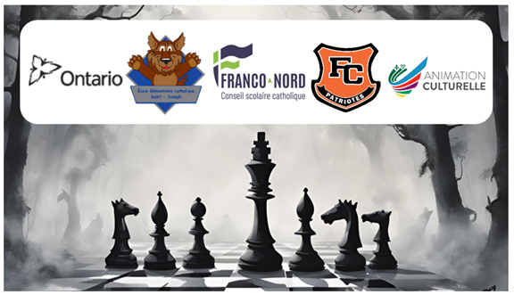

Bienvenue au tournoi d'échecs franco-ontarien 2026!
Le tournoi d’échecs franco-ontarien est un événement ouvert à la grandeur de la province, pour tous les conseils scolaires francophones et pour tous les groupes d’âge (maternelle à 12ième).
Durant cet événement, d’une durée de trois jours, 400 élèves ont l’occasion de jouer aux échecs, démontrer leurs prouesses stratégiques tout en partageant, en français, leurs richesses culturelles avec d’autres élèves provenant des quatre coins de la province.
L’École secondaire Hanmer, l’École publique Foyer-Jeunesse ainsi que le Conseil scolaire du Grand Nord sont heureux de vous inviter à la 17e édition du tournoi d’échecs franco-ontarien, qui se tiendra du 8 au 10 avril 2026.
Pour toute question, n’hésitez pas à contacter Natalie Lalonde par courriel à
natalie.lalonde@grandnord.ca.
